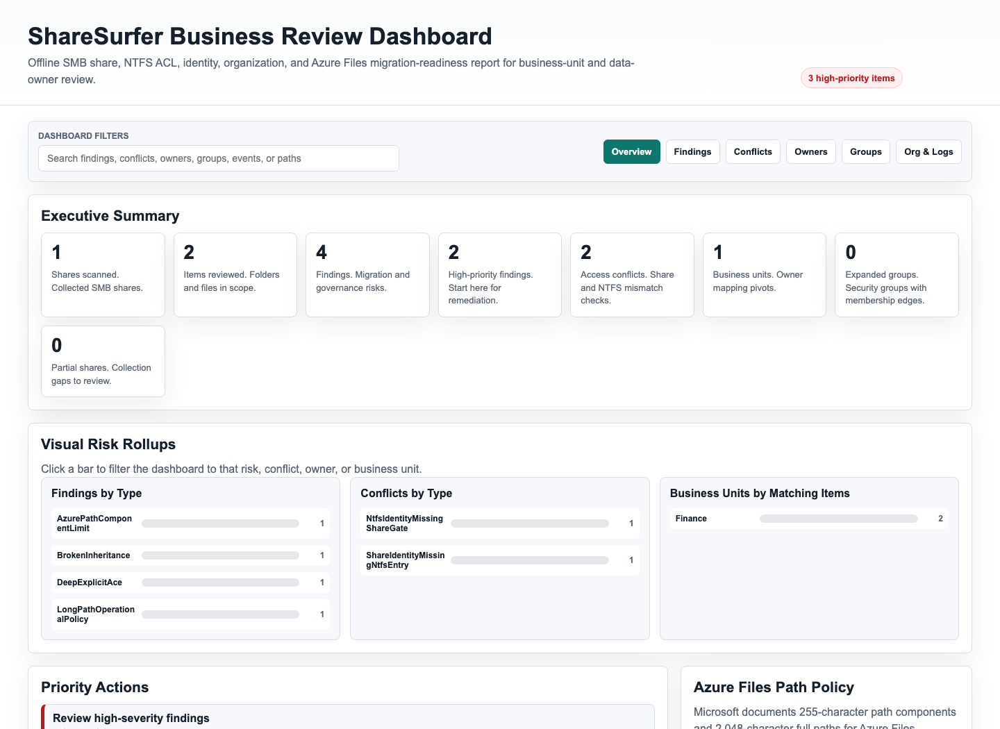
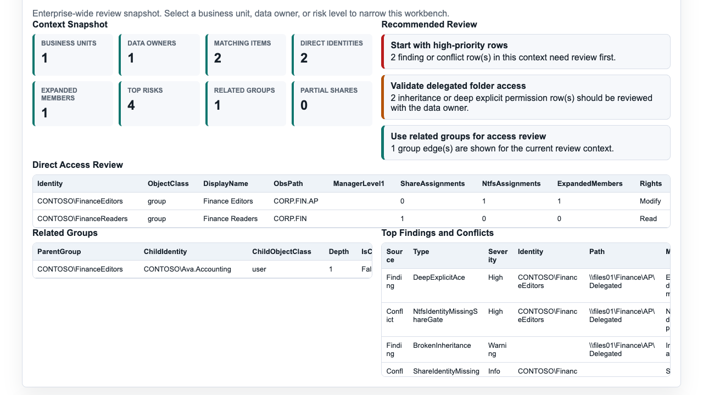
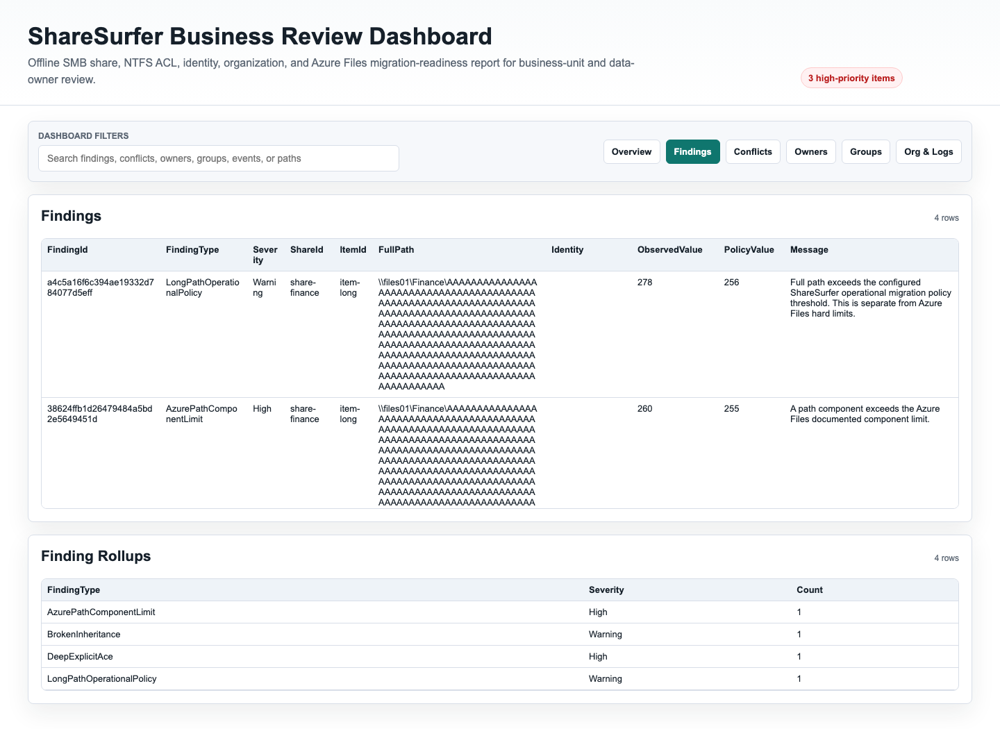
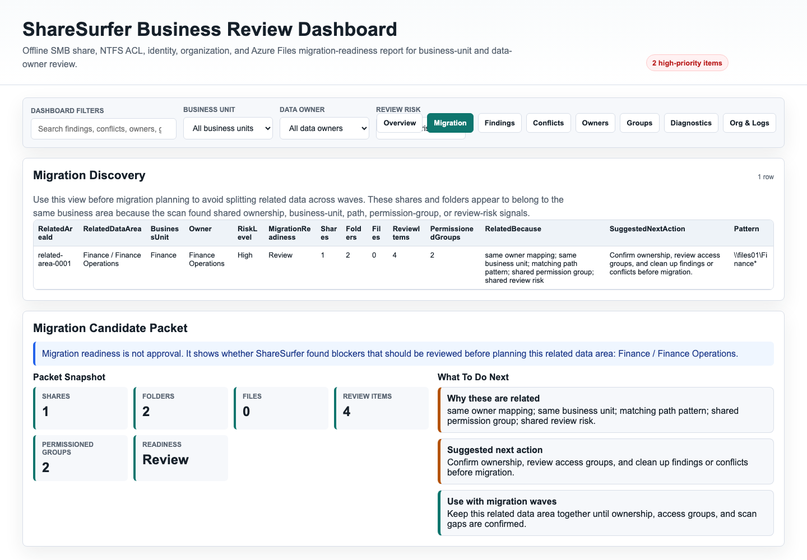

ShareSurfer Management Overview
A business-readable view of complex file-share access, ownership, and migration readiness.
Purpose
- Show who can access shared business data.
- Connect share permissions, folder permissions, file permissions, ownership, and group membership.
- Create evidence before cleanup, audit, or migration work.
Migration-Risk Findings
- Broken inheritance and deep explicit permissions.
- Share-vs-NTFS permission conflicts.
- Operational long-path warnings for migration planning.
- Partial data where access could not be proven.
Owner/Business-Unit Pivots
- Route findings by owner, business unit, OBS/OID path, manager, or security group.
- Expand groups so business owners can review actual membership paths.
- Support Excel, Power BI, audit, and remediation tracking.
- Find like-owned shares, folders, and files that should be planned together for migration.
Expected Outcomes
- Validated CSV exports and an offline report.
- Prioritized access and migration-risk review list.
- Clearer ownership before changes are made.
- Related-data areas for migration wave planning.
- Redacted support bundle when troubleshooting help is needed.
Example Report Views



